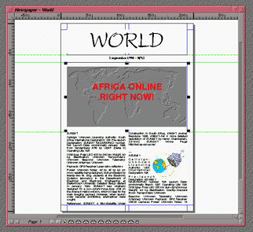

<!-- Documentation Xclamation (c)1994-2000 AXENE contact axene@axene.org>
<html>

<head>
<title>Document Window</title>
</head>

<body BGCOLOR="#FFFFFF" BACKGROUND="Images/back.gif" TEXT="#000000">

<p ALIGN="right">
</p>

<p><br>
<br>
Each document opened using Xclamation is displayed in a window on the desktop. A document
window is similar to an &quot;application window&quot; in UNIX; that is, it can be moved,
horizontally or vertically re-sized, made into an icon, maximized for size, or closed. <br>
<br>
</p>

<hr>

<p align="center"><br>
 <br>
<small><i>Screen shot: Document window. </i></small></p>

<p><br>
</p>

<hr>

<p><br>
</p>

<p>All document windows in Xclamation are set up in the following manner (vertically and
horizontally): 

<ol>
  <li><b>The Window Management Interface</b> is all the area around the window, dressing it.
    The interface operates in a standard manner, like all multi-window systems. The outline of
    an active document is mauve; that of an inactive document is gray. All functions effected
    through menubars and icons act only upon the active document. Clicking on the window of an
    inactive document activates it. The upper horizontal toolbar is made up of: <br>
    &nbsp;<ul>
      <li> The <b>Closing a Document</b> button. This button
        performs the same function as &quot;<a HREF="Menu_File.html"><i>File</i></a> / <a HREF="Menu_File.html#close_menu_entry"><i>Close</i></a>&quot;. <br>
        &nbsp;</li>
      <li> The <b>Title Bar</b>, which displays the document's name
        as defined in the '<a HREF="Box_New_Document.html#edit_document_name">New Document</a>'
        dialog box. Clicking on the title bar of a document shifts its window to the foreground
        and activates the document. The document <b>window may be moved</b> by clicking and
        holding on the title bar with the left mouse button and releasing it elsewhere on the
        desktop. <br>
        &nbsp;</li>
      <li> The <b>create icon</b> button shifts the document
        window to <a HREF="Main_Interface.html#document_icon">icon representation</a>. <br>
        &nbsp;</li>
      <li> The <b>maximize</b> button enlarges the document
        window to the size of the desktop, thus shifting the document to <a HREF="Main_Interface.html#document_maximized">maximum window</a> form. <br>
        &nbsp;</li>
    </ul>
    <p>The left, right, and bottom sides as well as the lower left and lower right corners are
    used to <b>re-size the window</b> on the desktop by taking one of these sides or one of
    the two corners and stretching the window horizontally, vertically, or diagonally, then
    releasing. <br>
    &nbsp;</p>
  </li>
  <li><b>Rulers</b>. There are two <a HREF="Rulers.html">rulers</a>, one vertical and one
    horizontal, which measure the display screen in millimeters. Rulers can be hidden or
    displayed from the <a HREF="Menu_View.html#rulers_menu_entry"><i>&quot;View&quot;</i> menu</a>.
    <br>
    &nbsp;</li>
  <li><b>The Display Screen</b>. The Display Screen is where the page layout of a document is
    created; from here a document's pages may be modified. The <a HREF="Pager.html">Page
    Manager</a> must be used to change the page displayed. The scrollbar icons make it
    possible to move within the display screen. A black line represents the outline of the
    page, with a shadow to indicate whether it's a left or right page; <a HREF="Box_New_Document.html#margins_frame">margins</a> and <a HREF="Box_New_Document.html#sector_frame">sections</a> are displayed with blue lines,
    ruler lines are green, and the <a HREF="Menu_View.html#grid_menu_entry">grid</a> is in
    red. <br>
    &nbsp;</li>
  <li><b>The Scrollbars</b>. Two lifts provide for horizontal and vertical movement on the
    display screen. It is possible that only one scrollbar, perhaps neither, is displayed,
    depending upon the enlargement factor of the display screen view or on the size of the
    document window, or both. <br>
    &nbsp;</li>
  <li><b>The Page Manager</b>. The user may change the page appearing on the display screen of
    a document using the <a HREF="Pager.html">page manager</a>. <br>
    &nbsp;</li>
</ol>

<p><br>
</p>

<hr>

<p ALIGN="right"></p>
</body>
</html>
